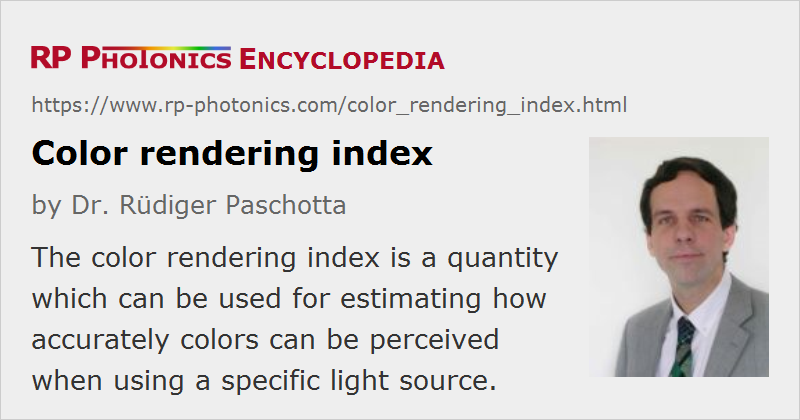

Color Rendering Index
Acronym: CRI
Definition: a quantity which can be used for estimating how accurately colors can be perceived when using a specific light source
German: Farbwiedergabeindex
Category: light detection and characterization
How to cite the article; suggest additional literature
Author: Dr. Rüdiger Paschotta
The perception of colors of objects can be modified by certain spectral properties of light sources used for illumination. The color rendering index (CRI) is a quantitative measure for estimating how strong such effects are for a particular light source.
In the following, the physical basis of color perception of objects is explained, and also which role the details of the illumination plays in that context. Thereafter, the principles underlying the definition of the color rendering index are explained, and some typical cases are discussed. See also the article on color vision for more fundamental aspects.
Physical Principles
Color Perception and Illumination
The colors of objects can be seen only if a suitable illumination is provided. The most basic condition for color perception is that the incident light contains a substantial range of spectral components, which are associated with different colors. Usually, one will use white light, e.g. daylight, being a mixture of all visible spectrum components, or some artificial white light source. The color balance of light which is transmitted or reflected (or scattered) at colored objects is then modified according to the wavelength-dependent transmittance or reflectance. Thus, the transmitted or reflected light produces a color impression, while the incident white light did not when directing reaching the eye. For example, if an object strongly absorbs the shorter-wavelength components of the incident light (in the blue and violet region), the transmitted or reflected light will be primarily consisting of the longer-wavelength components, which create a red or orange appearance of the object. Similarly, a green appearance arises if the medium wavelength components of the white light are preserved while the longer- and shorter-wavelength components are attenuated.
Problems for Non-white Light
Most serious problems with color perception arise if the illumination light is not white. An extreme example case is the illumination with a low-pressure sodium vapor lamps, which emits only yellow light – not far from monochromatic light (single-color light). In such a case, no illuminated object can ever appear green or blue or deep red, because light with such colors is simply not present in that situation (except if the object exhibits fluorescence).
The Case of a Structured Optical Spectrum
Less severe color perception problems occur if the illumination light contains a wide, but not continuous distribution of wavelength components – for example, if the optical spectrum of the light source consists only of some limited number of spectral lines. The illumination light may then still appear white, e.g. quite similar to daylight, and illuminated objects can appear with various colors. However, the color impression may then substantially deviate from that for illumination with broadband (continuous-spectrum) light.
As an example, consider an object which efficiently scatters most wavelength components while strongly absorbing a narrow range of wavelength components e.g. in the blue spectral range. If the light source happens to emit blue light only within that strongly absorbing region, a strong color impression (e.g. deeply saturated orange) can occur. In daylight, however, that orange color would be much less saturated, since only a small part of the incident blue light can be absorbed due to the narrow absorption bandwidth.
Another object, where the absorption in the blue region is more broadband but outside the emission lines of the light source, may appear white under the artificial illumination, since it cannot absorb any of the incident light, while under daylight it appears colored. Such color deviations are what is meant with a limited color rendering capability of such light sources.
Common Light Sources with Limited Color Rendering
Such types of color perception problems occur for various artificial light sources, in particular for the following types:
- Fluorescent lamps exhibit some combination of spectral lines (often above some continuum), determined by the used type of phosphor. Earlier models, containing a phosphor with light emission essentially only in two different wavelength regions, had quite poor color rendering properties. Nowadays, a triphosphor mixture is common; this has much improved color rendering and also an improved luminous efficacy. There are special phosphor mixtures with even better color rendering, but a reduced efficacy.
- Some other types of gas discharge lamps also emit light with the spectrum featuring prominent peaks, but depending on the type of lamp, there can also be a broad continuum – particularly for high pressure discharge lamps. For example, high intensity discharge lamps based on xenon have a quite smooth emission spectrum, causing minimal color deviations.
- White light-emitting diodes (LEDs) also have a quite structured spectrum – often a combination of blue light, which is directly emitted by the LEDs, with fluorescence e.g. in the yellow spectral region from a phosphor which is excited by absorbing part of the blue light. Just as for fluorescent lamps, there are different LED designs, using different phosphors which can significantly vary in terms of color rendering.
How Critical are Color Rendering Limitations?
How serious color perception problems are in practice, depends on three aspects:
- on the details of the optical spectrum of the light source,
- on the spectral properties of the illuminated objects (e.g. whether they exhibit narrow absorption features), and
- on how color-critical the application is.
For example, color details are often not particularly important for lighting of offices and manufacturing workplaces, while they can be critical in the context of fashion or arts. Fortunately, the spectral absorption features of most colored objects are relatively broadband, so that really severe color deviations are rare, even for illumination with light having a quite structured optical spectrum.
Definition of the Color Rendering Index
While the principles of color rendering problems, as explained above, have been known for a long time, it has been difficult to develop the color rendering index (CRI) as a quantitative measure for the color rendering qualities of light sources. That work has been supervised by CIE, the International Commission on Illumination. A quite sophisticated procedure for determining the CRI of a light source has been developed. One first determines the correlated color temperature of the source. One then defines a reference light source, which is a blackbody source if the color temperature is below 5000 K, and the CIE standard illuminant D in other cases. (Note the discontinuity of the definition at 5000 K.) One essentially measures resulting deviations of color appearance between the test source and the reference source for some number of standardized test samples and combines the results in a mathematically complicated way to finally obtain the color rendering index. That number is 100 in the ideal case (e.g. for blackbody radiation) and lower otherwise. Negative values are in principle possible, but basically never occur in practice.
The color rendering index is defined only for more or less white light sources, although color temperatures can vary in a substantial range.
Note that color rendering can also be an important issue in the context of displays, e.g. liquid crystal displays. However, the concept of the color rendering index cannot be applied there; the same applies to displays based on RGB sources. The reason for that is that the aspect of illuminating colored objects is not involved in such cases.
Example Cases in Lighting
For many light sources with a smooth, continuous spectrum – for example, incandescent lamps including halogen lamps, but also high-pressure xenon lamps – the color rendering index is above 95. There should then be no significant color rendering issues even in critical applications. Generally, CRI values above 90 can be considered as excellent.
Fluorescent lamps with old-style phosphors (calcium halophosphate phosphors) exhibited fairly low CRI values around 50 to 70. For such poor values, significant color deviations can occur, which can still be considered as acceptable for ordinary lighting applications. However, third-generation lamps with triphosphors, containing europium and terbium and emitting a combination of blue, green and orange–red light, are performing much better both in terms of CRI (around 85) and luminous efficacy (80–95 lm/W). Further, there are multi-phosphor tubes with a CRI of 95 or sometimes even more, offering close to perfect color rendering, but often a lower luminous efficacy, effectively leading to higher electricity consumption. There is thus often a trade-off between optimum CRI and highest efficacy (energy efficiency), and sometimes also with manufacturing cost. As a result, many lamps are used in practice where the color rendering is reasonably good, but not the highest technically possible.
Ordinary consumer LED lamps often have a CRI around 80. With improved designs, values above 90 are possible. However, that may not only lead to increased production cost, but also to a reduced luminous efficacy – just as for fluorescent lamps.
Limitations of the Color Rendering Index
The color rendering index as defined by CIE is a reasonable measure for the color rendering qualities of light sources. However, the concept is not perfect:
- As already mentioned above, the method is rather complicated to apply.
- Due to various imperfections, the CRI is not a perfectly reliable measure. Improved versions, e.g. with an increased number of test samples and modified color transforms have been proposed.
Nevertheless, the CRI of CIE in its official form is still the most widely accepted measure. It is now common that the specifications of lighting products contain the color rendering index in addition to the color temperature and the luminous efficacy.
Questions and Comments from Users
Here you can submit questions and comments. As far as they get accepted by the author, they will appear above this paragraph together with the author’s answer. The author will decide on acceptance based on certain criteria. Essentially, the issue must be of sufficiently broad interest.
Please do not enter personal data here; we would otherwise delete it soon. (See also our privacy declaration.) If you wish to receive personal feedback or consultancy from the author, please contact him e.g. via e-mail.
By submitting the information, you give your consent to the potential publication of your inputs on our website according to our rules. (If you later retract your consent, we will delete those inputs.) As your inputs are first reviewed by the author, they may be published with some delay.
See also: white light, color vision, colorimetry, colorimeters, absorption, color temperature, white light, white light sources
and other articles in the category light detection and characterization
|  |
If you like this page, please share the link with your friends and colleagues, e.g. via social media:
These sharing buttons are implemented in a privacy-friendly way!